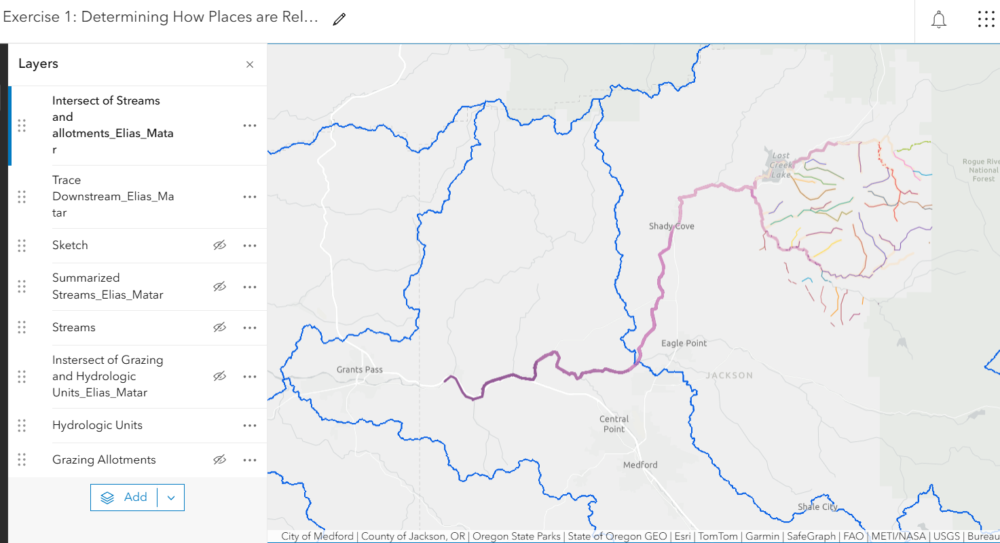
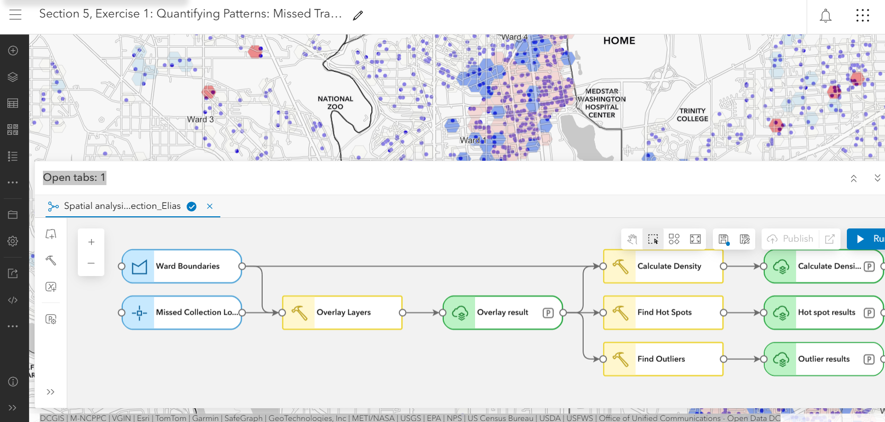
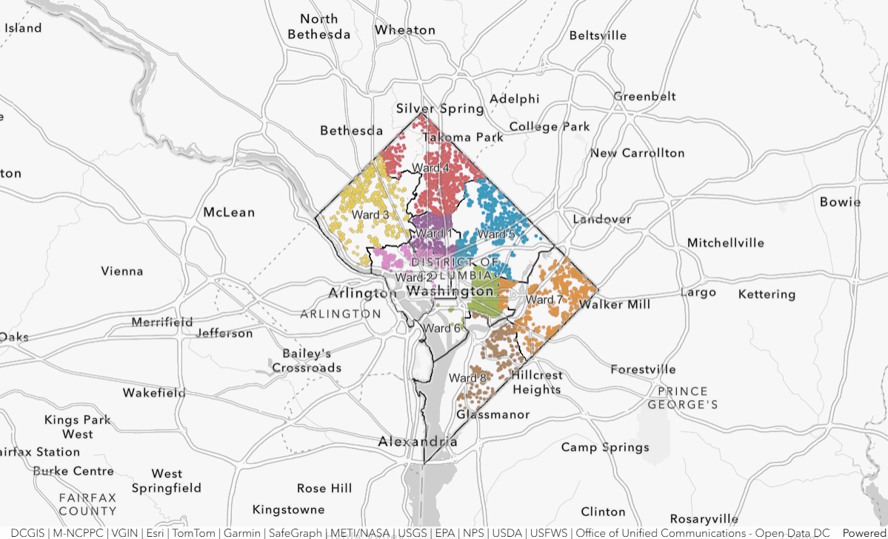

05 / Esri “Going Places with Spatial Analysis” (MOOC)
Spatial analysis — suitability, hydrology and pattern detection
Maps and analysis workflows I built during Esri’s spatial-analysis course. The capstone is a cougar-habitat suitability analysis presented as a Story Map: it compares potential habitat under a narrower (state-parks) and a broader (wildlife-agency) set of criteria and highlights where likely habitat overlaps with areas of probable human–wildlife interaction, so managers can prioritise field verification.
Other exercises cover downstream tracing and watershed overlay, and hot-spot / outlier detection built as a repeatable model.


